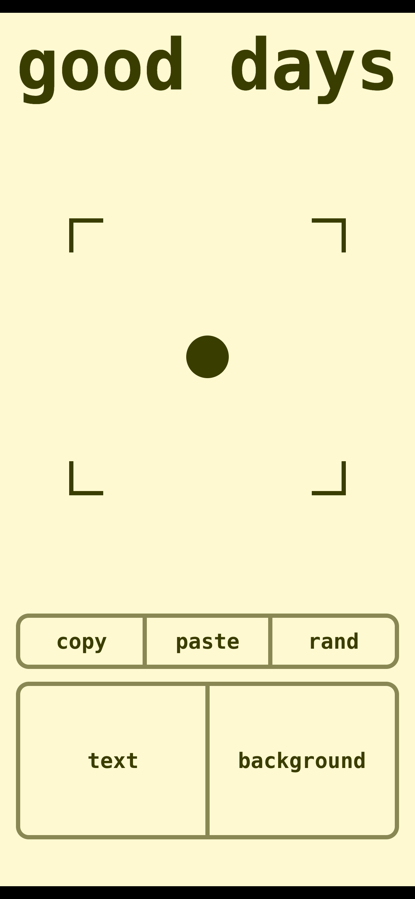
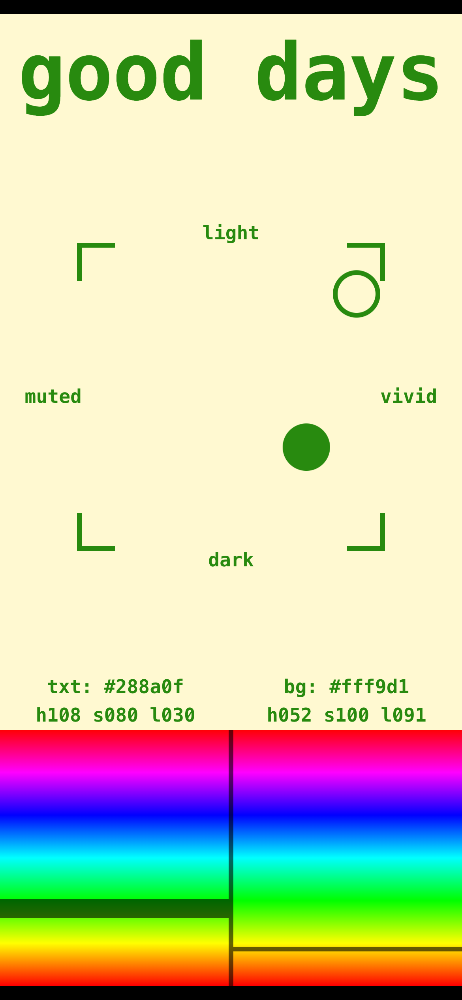
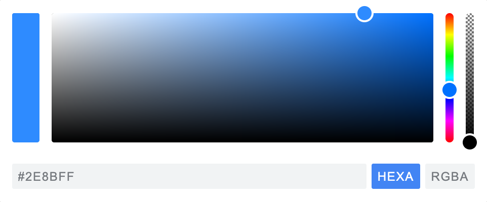
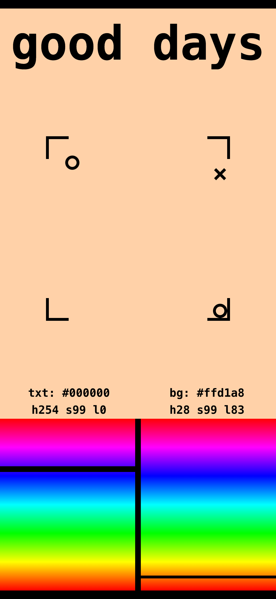
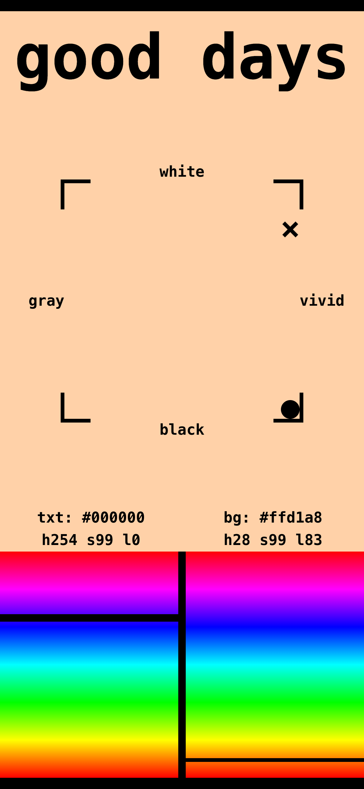
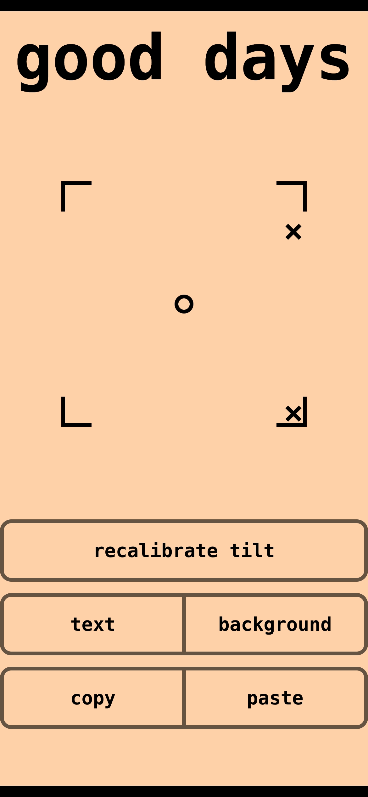
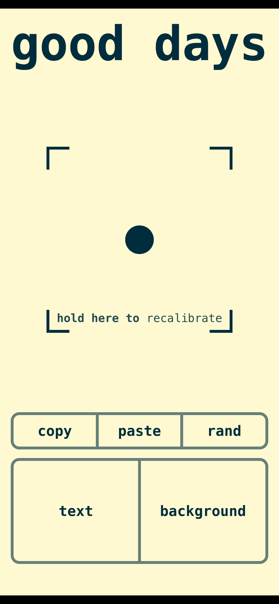
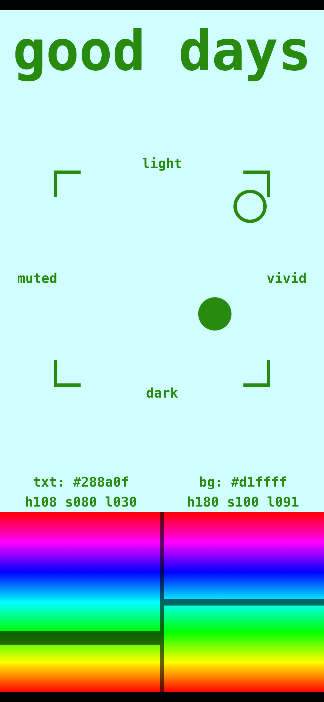
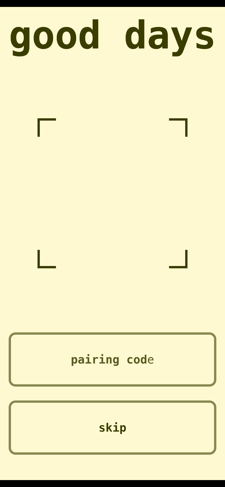

An exercise in first-principles interface design: rebuilding the color picker to run on a phone's tilt and touch sensors instead of a mouse.


the finished picker — controlled by tilt and touch on an iPhone
From good days, a journaling app I build where you compose your own colorway. The color picker — set a hue, a saturation, a lightness — has barely changed in decades, which makes it the perfect thing to rebuild: a familiar target, redrawn from the inputs a phone actually has.
start from the canonical widget

Pick a color almost anywhere and you get the same thing — shaped, top to bottom, by one assumption.
A 2-D square for saturation and lightness, a strip for hue, a hex field. It's a good design, and it assumes one thing throughout: you have a precise pointer, a mouse.
Delete that assumption. A color is three continuous numbers; picking one is just setting three values with live feedback — no mouse required. So the question isn't "how do I shrink this onto a phone," it's: what inputs does this device actually have, and what's the best way to map three numbers onto them? Everything below is the answer.
· hue — canonical: a precise pointer on a slider. here: your thumb on a bar — a precise 1-D input for the one axis that genuinely needs precision.
· saturation + lightness — canonical: drag a cursor around a 2-D box, one careful pointer motion. here: wrist tilt on two axes at once — coarse, embodied, and running in parallel with the thumb instead of after it.
· one color → two — canonical pickers set a single color at a time. here: text and background together (two fingers), because in a journal a color only matters against its pair.
· preview — canonical: a swatch. here: the live document itself, recoloring under your hands.
the reframe · v1.8.2
A color is three continuous numbers. A phone has three continuous inputs nobody uses for UI.
Three smooth dials — hue, saturation, lightness. A phone has three smooth inputs normal apps ignore: tilt left/right (gamma), tilt forward/back (beta), and your thumb on the glass. v1.8.2 mapped them straight across, replacing the old "not supported on mobile" screen:
Mobile redesign with accelerometer color picker - Replace "not supported on mobile" with interactive color picker - Press and hold text/background button to edit colors - Vertical drag controls hue (0-360°) - Phone tilt controls saturation (left-right) and lightness (forward-back)
The L-bracketed square is the saturation/lightness plane; the dot is your live tilt. Flat = dead center, 50/50. You stop poking at a gradient and steer the color with your wrist.
How many degrees should it take to go 0→100%? Pure trial and error over four versions. The first build needed a 45° tilt to hit an extreme — too coarse, you'd wave the phone around. It tightened each release: 45° → 20° (v1.8.6) → 15° (v1.9.12) → 10° (v1.10.7).
So each axis reaches its extreme at just ±10° from your calibrated flat — saturation in a 20°-wide left-right window, lightness forward-back. A small wrist movement covers the whole plane; that's what makes it feel precise instead of floppy. Smaller felt twitchy — 10° was the floor.
the core gesture · v1.10.61
Press, and you're already adjusting — no setup, no mode to enter.
The moment your thumb lands on text or background: a 10 ms haptic tick, the picker takes over, the hue spectra slide up. The whole UI — title included — recolors to the color you're holding, so you always know what you're editing without a label.
And the color jumps to your current tilt the instant you press — deliberately, to keep calibration honest: center always means center. Lift off and a [5, 30, 5] haptic locks it; back to home.
A big ~40px dot — oversized so it reads with your thumb on the glass and the phone moving. Filled = the color you're steering; hollow = the other color, parked at its own sat/light so you see both at once. Home shows one dot: pure tilt feedback.
the dead end · built to stop whiplash, then deleted
A whole control scheme — "seek and dock" — was built to prevent the sudden color jump when you start picking. It shipped for a week, then I deleted it.
The problem: press a color and your phone is already at some tilt. If tilt took over immediately, the color would lurch to wherever the phone was pointing — whiplash, every time.
The first fix was a docking ritual: tilt did nothing until you steered a free-moving cursor onto the color's current spot. The markers carried the state in their shapes:
Two-dot seeking/docking system for mobile color picker Mobile tilt square now uses a seek-then-adjust mechanic: tilt only controls sat/light after deliberately docking with the target. Three marker shapes (square=cursor/target, X=locked, dot=LIVE).
New marker logic - hollow + hollow = filled - Home: Two X's + hollow circle (cursor, nothing happens) - Seeking: Hollow circle (cursor) + hollow circle (target) + X (other) - Adjusting: Filled circle (LIVE) + X (other) Two hollow circles collide → one filled circle.
That's the moment: a hollow ○ cursor and a hollow ○ target, with the ✕ marking the other color. Drag the circles together — they snap on collision (v1.10.52) and fuse into one filled ● dot. Only then did tilt engage. Because you'd arrived at the color's real position first, there was no jump.


Real screenshots, reconstructed by checking out the actual v1.10.53 commit, building it, and driving the live old code with synthetic tilt — not mockups.
It was clever and wrong: a ritual — find it, dock it, watch the shape change — before you could pick a color. Six days later it was deleted:
Mobile UX overhaul — button width, markers, spacing, WS sync - Remove seek phase from color picker — go directly to adjusting - Simplify markers: filled dot (active), hollow circle (inactive), single dot on home
The trade: accept the whiplash to kill the ritual. Now pressing a color jumps it straight to your tilt — on purpose, because it keeps the mapping honest (center = center), and hold-to-recalibrate makes the jump a non-issue. Zero modes beat zero whiplash.
raw vs. filtered · v1.10.32 → v1.10.35
The accelerometer is noisy. The obvious move is to smooth it. I tried that, and took it back out.
Reading device tilt gives you a jittery signal — your hand is never perfectly still. The first instinct was to filter it: add a short easing transition so the dot glides instead of trembling.
Smoother tilt marker movement Add 50ms CSS transitions to square, X, and dot markers for smoother accelerometer-driven animation.
It looked calmer and felt worse. Any smoothing is a low-pass filter, and a low-pass filter is just latency — the dot lagged behind the phone, so the color trailed your wrist. I tightened it (33ms + GPU compositing), then pulled the filter out entirely:
Remove transition for instant marker response Pure GPU-accelerated transforms with no transition delay. Testing if sensor jitter is acceptable.
The jitter was acceptable; the lag wasn't. The shipping build feeds raw orientation straight through every frame, positioned with GPU transforms for 60fps. For a control you're steering, a tremor that tracks you instantly beats a smooth value that arrives late. Feel gets tuned elsewhere — the ±10° range and hold-to-recalibrate — not the signal.
calibration · v2.5.29 → v2.6.75 → v2.7.19
The center of the square has to map to some real phone angle. Recalibrate lets you set that angle to however you're actually holding the phone — instead of forcing you to hold it level.
Same tilt always means the same color, so the picker needs a baseline — but a phone in your hand sits at some random angle. So recalibrate re-zeros the baseline to your current posture, and v2.5.29 made it live: hold and it re-zeros every frame (~60fps), so you settle the phone while holding, then release to lock it.
Live continuous calibration on recalibrate hold Re-zeroing the tilt baseline every orientation frame (~60fps). Drag off to stop early; last zero-point sticks.


The decision: delete the button. Recalibrate started as a labelled button taking a whole row (left). But the tilt square is the thing you're already touching — so the button went away and calibration became a gesture on the square itself: hold anywhere in it to re-zero. One fewer button, one fewer word.
Move calibration to square segment, add rand button (randomize, which used to live here, moved to its own "rand" button)
But an invisible gesture is undiscoverable — so it teaches itself, then leaves. A bold-sweep "hold here to recalibrate" fades in inside the square (right), but only after your first pick, when it first matters. It disappears the first time you calibrate and stays gone for the rest of the session.
Show hint after first picker return, not on first visit → wording "hold here to recalibrate" → session-based dismiss (reappears next visit; never permanently gone)
two hands, two colors · v1.10.64

You're never picking one color — you're balancing text against background.
So the picker reads both bars at once. This is a genuine two-finger capture: the second finger dragged the background hue on the right bar while the text color held — you can see the whole screen has recolored to the new pale background, and both bars carry live needles.
Multitouch alpha/beta hue control Two-finger simultaneous control: alpha finger claims tilt for S/L while beta independently drags the other hue bar. Releasing alpha promotes beta (tilt switches). Needle sizes: alpha 16px, beta 8px, idle 4px.
The first finger down is alpha — it owns tilt (the active color's saturation + lightness) and its own hue bar. A second finger on the opposite bar becomes beta and drives that hue alone. Lift alpha and beta is promoted instantly: its needle thickens, tilt transfers to it, no mode switch. A mouse can't set two colors at once; two fingers on a touchscreen can.
A journal's text color only matters against its background. Single-color pickers force you to set one, switch, set the other, switch back to compare. Two-finger control collapses that loop — you watch the contrast resolve under your hands in real time.
the details that took the most versions
The hue markers got more commits than almost anything else. Here's why each value is what it is.
Thickness encodes who's in control. A hue needle is 4px when idle, doubles to 8px on the bar you're actively dragging, and grows to 16px for the alpha finger in two-finger mode. The growth is symmetric around the true hue centerline, so the thin midpoint always marks the exact hue — the needle gets bolder without lying about its position.
Transparency, so the needle never hides the color. The needles went through a whole sweep of opacity tuning — white at 50%, then 75%, then finally a black needle at ~60% opacity — landing semi-transparent on purpose: you can see the exact hue through the marker that points at it. Earlier versions even cut a transparent slit through the needle's center for the same reason.
Flush with the divider. The two bars are split by a 4px black divider at 60% opacity; each needle is inset 2px on its inner edge so it meets the divider cleanly instead of sliding behind it. And the spectrum runs ROYGBIV bottom-to-top (red at the bottom, violet at the top, no duplicate red) so "up" is consistently "toward violet."
closing the loop · v2.0

The optimal version isn't phone-only — it's the phone driving the screen you actually read on.
You journal on the laptop; the phone is the controller. Tilt and drag, and the laptop's colorway updates live over a WebSocket at ~24 fps. Phone = instrument, desktop = canvas — and the whole canvas is your preview.
Pairing is invisible when it can be: one laptop on the network auto-pairs; zero or two-plus drop to this 3-digit code screen; a stalled socket falls back here instead of hanging. skip uses the phone standalone.
A picker you can't see results from in context is guesswork. Streaming turns the laptop's real journal into the live preview — you watch your actual writing recolor under your hands, which is the only feedback that matters.
Streaming tilt is a firehose. The wire was the easy part; keeping it smooth on-device was the real fight.
Tilting generates dozens of updates a second — a request-per-update would drown in overhead. A WebSocket is the right primitive: one persistent connection, tiny JSON frames at near-zero cost, carrying both the pairing handshake and the color stream. A small relay (Fly.io) matches phone↔laptop on a 3-digit code and forwards frames; it never stores a color.
Framerate was pure experiment: 48 fps (too chatty) → 30 → 24 → a 12 fps test that felt laggy → settled at 24 fps / 42 ms, live without flooding the wire.
Settle on 24fps WS throttle (42ms) (after 48fps → 30fps → 24fps → 12fps tests)
But the wire was never the bottleneck — renders on the laptop were. 24 updates/sec naively meant 24 React re-renders/sec, plus gradient regeneration ~40×/sec — starving the frame budget into a stutter. Three fixes:
rAF-throttle color updates to fix frame drops Color-update messages buffer in a ref and apply once per animation frame instead of a React render per message — caps renders at the display refresh rate.
CSS custom properties for smooth live streaming Bypass React entirely during streaming. Inline HSL styles reference CSS variables (--h, --s, --l, …) set on :root via rAF — zero React state updates per frame.
And the subtle one: the gradient was rebuilding every frame — freezing it during streaming (dots still moving via CSS vars) gave the budget back (v2.5.3). The takeaway: the network made it "live" for free; "smooth" meant getting React and the browser out of the per-frame path.
where it landed
At rest (left) and mid-pick (right) — same colorway, a control surface that never moves, zero modes.
One idea ties it together: the phone is a physical instrument, so it behaves like one. The square sits at the same pixel on every screen and never moves (a ResizeObserver + invisible skeleton enforce it) — an instrument's controls don't wander. Same tilt, same color. Pressing a button is entering the picker. Hold the square to set neutral to your grip. Each of these decisions reduces the delay between deciding on a color and getting it.